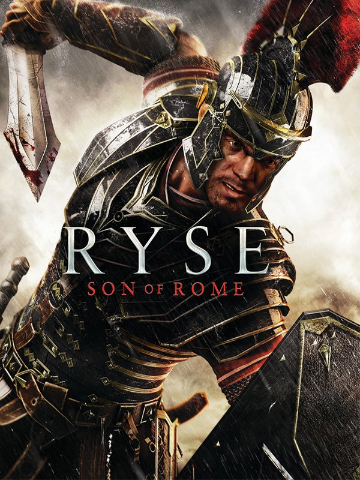

Ryse: Son of Rome
Ryse: Son of Rome
Details
|  | |
| Playtime | Not Played |
| Last Activity | Never |
| Added | 25/12/2022 22:56:52 |
| Modified | 18/05/2025 0:35:19 |
| Completion Status | Not Played |
| Library | Steam |
| Source | Steam |
| Platform | PC (Windows) |
| Release Date | 22/11/2013 |
| Community Score | 71 |
| Critic Score | 66 |
| User Score | |
| Genre | Adventure Hack and slash/Beat 'em up |
| Developer | Crytek Frankfurt |
| Publisher | Crytek Deep Silver Microsoft Studios |
| Feature | Co-Operative Multiplayer Single Player |
| Links | Official Website Steam Wikipedia Twitch |
| Tag | Action Adventure Atmospheric Benchmark Co-op Fantasy Gore Hack and Slash Historical Linear Multiplayer Nudity Open World Quick-Time Events Rome RPG Short Singleplayer Third Person War |
Description
Fight as a soldier. Lead as a general. Rise as a legend.
“Ryse: Son of Rome” tells the story of Marius Titus, a young Roman soldier who witnesses the murder of his family at the hands of barbarian bandits, then travels with the Roman army to Britannia to seek revenge. Quickly rising through the ranks, Marius must become a leader of men and defender of the Empire on his quest to exact vengeance – a destiny he soon discovers can only be fulfilled much closer to home...
About Ryse: Son of Rome
Journey to the heart of the Roman Empire and experience the brutality of battle like never before as "Ryse: Son of Rome" comes to PC with support for glorious 4K resolution. Continuing Crytek's legacy for groundbreaking games, Ryse pushes PC hardware to its limits whilst drawing players deep into the bloody drama of ancient Rome.
“Ryse: Son of Rome” is an immersive action-adventure story of struggle, brutality and heroism. It follows a fearless Roman soldier named Marius Titus who joins the army to avenge the slaying of his family and emerges as a hero who must fight to save the Roman Empire.
“Ryse: Son of Rome” presents a cinematic re-creation of the Roman Empire, its people, conflicts and landscapes in breathtaking detail and brings the brutality and intensity of Roman warfare to life in visceral detail.
Features
The complete Ryse experience
The PC version of “Ryse: Son of Rome” offers the full experience, bundling the original Xbox One launch hit with all its DLC.
Taking full advantage of the PC
4K gaming is another leap in graphics quality for PC gamers and Ryse is the perfect showcase for what’s now possible in high-end PC games. “Ryse: Son of Rome” leverages the power of Crytek’s CRYENGINE and the latest High-End PC gaming technology to present conflict in the Roman Empire like you’ve never seen it before.
Next-generation cinematic immersion
Marius’ tale of revenge comes to life through new advancements in performance capture, allowing players to interact with believably realistic characters
Brutally intense combat
“Ryse: Son of Rome” delivers a visceral, brutally realistic combat experience with epic-scale battles. Relive the ruthless history of ancient Rome as you engage in raw close-quarters combat against the barbarian hordes.
Cooperative gladiatorial combat in the Colosseum
Colosseum Mode, plunges you into the Arena to fight alongside a friend against an ever-changing array of enemies and challenges, to the roar of thousands of spectators.
A dynamic battlefield
Colosseum Mode includes 26 multiplayer maps, with tile sets ranging from British camps to Roman villas and Egyptian deserts.
Forge your own Legend
You decide your destiny, customizing your gladiator through gold and Valor (XP) with new armor, weapons, shields, and consumables to win the crowd and survive in the arena.
Bonus Content
"Ryse: Son of Rome" for PC will come with all bonus material originally released as downloadable content for the Xbox One version, including:
• The Colosseum Pack containing two character skins and two Arena maps.
• The Mars’ Chosen Pack containing one new character skin, four Arena maps, and the new Survival mode.
• The Duel of Fates Pack containing two character skins, two Arena maps, and one additional Survival map.
• The Morituri Pack, with three new Arena maps, two Survival maps, and five solo Arena maps.
“Ryse: Son of Rome” tells the story of Marius Titus, a young Roman soldier who witnesses the murder of his family at the hands of barbarian bandits, then travels with the Roman army to Britannia to seek revenge. Quickly rising through the ranks, Marius must become a leader of men and defender of the Empire on his quest to exact vengeance – a destiny he soon discovers can only be fulfilled much closer to home...
About Ryse: Son of Rome
Journey to the heart of the Roman Empire and experience the brutality of battle like never before as "Ryse: Son of Rome" comes to PC with support for glorious 4K resolution. Continuing Crytek's legacy for groundbreaking games, Ryse pushes PC hardware to its limits whilst drawing players deep into the bloody drama of ancient Rome.
“Ryse: Son of Rome” is an immersive action-adventure story of struggle, brutality and heroism. It follows a fearless Roman soldier named Marius Titus who joins the army to avenge the slaying of his family and emerges as a hero who must fight to save the Roman Empire.
“Ryse: Son of Rome” presents a cinematic re-creation of the Roman Empire, its people, conflicts and landscapes in breathtaking detail and brings the brutality and intensity of Roman warfare to life in visceral detail.
Features
The complete Ryse experience
The PC version of “Ryse: Son of Rome” offers the full experience, bundling the original Xbox One launch hit with all its DLC.
Taking full advantage of the PC
4K gaming is another leap in graphics quality for PC gamers and Ryse is the perfect showcase for what’s now possible in high-end PC games. “Ryse: Son of Rome” leverages the power of Crytek’s CRYENGINE and the latest High-End PC gaming technology to present conflict in the Roman Empire like you’ve never seen it before.
Next-generation cinematic immersion
Marius’ tale of revenge comes to life through new advancements in performance capture, allowing players to interact with believably realistic characters
Brutally intense combat
“Ryse: Son of Rome” delivers a visceral, brutally realistic combat experience with epic-scale battles. Relive the ruthless history of ancient Rome as you engage in raw close-quarters combat against the barbarian hordes.
Cooperative gladiatorial combat in the Colosseum
Colosseum Mode, plunges you into the Arena to fight alongside a friend against an ever-changing array of enemies and challenges, to the roar of thousands of spectators.
A dynamic battlefield
Colosseum Mode includes 26 multiplayer maps, with tile sets ranging from British camps to Roman villas and Egyptian deserts.
Forge your own Legend
You decide your destiny, customizing your gladiator through gold and Valor (XP) with new armor, weapons, shields, and consumables to win the crowd and survive in the arena.
Bonus Content
"Ryse: Son of Rome" for PC will come with all bonus material originally released as downloadable content for the Xbox One version, including:
• The Colosseum Pack containing two character skins and two Arena maps.
• The Mars’ Chosen Pack containing one new character skin, four Arena maps, and the new Survival mode.
• The Duel of Fates Pack containing two character skins, two Arena maps, and one additional Survival map.
• The Morituri Pack, with three new Arena maps, two Survival maps, and five solo Arena maps.